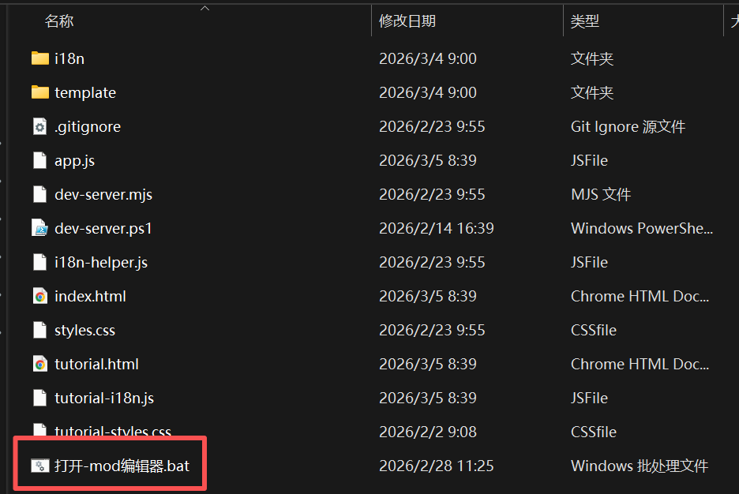
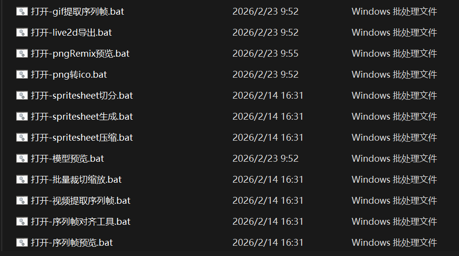
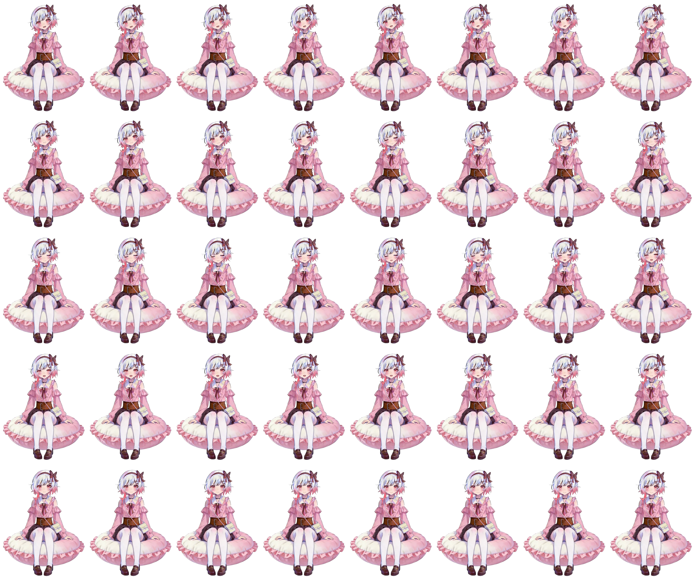
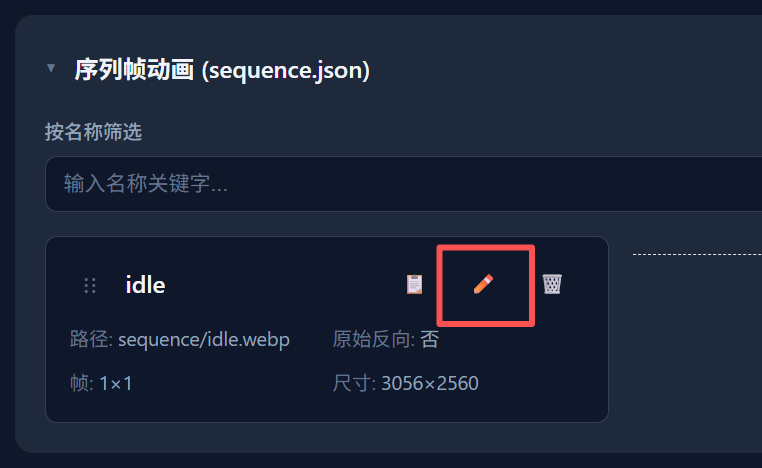

📚 Mod 创建教程
本教程将逐步指导你如何创建不同类型的 Mod，包括序列帧、Live2D 和 PngRemix。
本项目仍处于早期阶段，如果您有任何疑问，欢迎联系我们。QQ群：578258773 Bilibili: _Cafel_
📦 如何新建 Mod
打开 Mod 编辑器
在安装并打开程序后，您可以右键托盘图标或人物挂件以打开右键菜单，之后选择 Mod编辑器。

系统会打开一个文件夹，请直接双击 打开-mod编辑器.bat

您的Web浏览器会启动一个新的窗口，这就是我们的Mod编辑器

新建 Mod
在打开Mod编辑器后，您可以点击右上角的 新建Mod 按钮

之后，请在弹出的窗口内填写基本信息，并根据您的动画类型选择对应的Mod类型，最后点击 创建

创建完成后，请注意此时Mod还并没有在本地创建任何文件，因此推荐您首先点击右上角的 保存 并选择一个文件夹

我们推荐您将Mod保存目录设置为 程序安装目录内的mods文件夹，这样启动程序时可以直接加载您的新Mod而无需任何额外操作
等待系统右下角出现 保存成功 的提示之后，相关的文件就被保存到了目标文件夹中

您现在可以开始正式创作您的Mod了
🎬️ 如何快速创建序列帧 Mod
处理动画
在安装并打开程序后，您可以右键托盘图标或人物挂件以打开右键菜单，之后选择 其他工具

系统会打开一个文件夹，这里陈列了TrayBuddy提供的工具链

不论您的原始素材是 GIF/视频/一组差别png，您都可以使用工具链中的工具来将他们转换为SpriteSheet
| 工具 | 功能 |
|---|---|
| GIF 提取序列帧 | 从 GIF 动图提取帧序列 |
| 视频提取序列帧 | 从视频文件提取帧序列 |
| Spritesheet 生成 | 将差别图组合并为精灵图 |
| Spritesheet 切分 | 将精灵图拆分为单帧 |
| Spritesheet 压缩 | 精灵图体积优化 |
| 序列帧预览 | 预览 差分图组/Spritesheet 动画效果 |
| 序列帧对齐工具 | 帧对齐和偏移调整 |
| 批量裁切缩放 | 批量图片处理 |

添加动画
当您拥有了第一个Spritesheet后，回到Mod编辑器，选择 动画 界面

请在 序列帧动画 (sequence.json) 右边点击 导入 按钮

选择您刚才的SpriteSheet后，编辑器会导入并生成一个新的动画，此时点击 编辑 按钮

请根据您的SpriteSheet，填写 横向帧数和纵向帧数，如果您的填写无误，帧宽度和帧高度会自动计算出来，确认无误后，点击 保存

添加状态
当您拥有了第一个动画后，选择 状态和触发 界面

展开 核心状态 分类标签，点击 idle 状态的 编辑 按钮

在打开的窗口内，找到 关联动画 下拉菜单，选择您刚才的动画，并点击保存

至此您就完成了一个最简单的序列帧Mod的创建，不要忘记点击 保存 将修改保存到您的文件夹
之后如果您的Mod保存在 程序安装目录内的mods文件夹，您可以直接启动程序调试您的Mod
🎭 如何快速创建 Live2D Mod
导入资产
进入Mod编辑器，选择 动画 界面
请在顶部按钮中点击 导入文件夹 按钮，选择live2d文件，保证model3.json直接处于该目录下，并等待右下角出现导入成功的提示

请在顶部按钮中点击 从文件同步配置 按钮，并检查 模型配置 (live2d.json - model) 分类签下的内容是否正确，如不正确，请自行补充

请在顶部按钮中点击 从文件同步资产 按钮，并检查 表情列表 (expressions) / 动作列表 (motions) / 背景/叠加图层 (background_layers) / 状态-动画映射 (states) 分类签下的内容是否正确

您也可以自己编辑状态映射，根据您的需求删除多余状态，或将动作和表情映射到同一个状态内
请在顶部按钮中点击 从文件生成输入事件 按钮，以根据live2d内配置的参数生成输入事件
如果您的live2d是BongoCat，则配置到此结束了，请继续下一步：状态和触发。如果不是，请继续查看后续内容
添加状态
当 状态-动画映射 (states) 分类标签下的内容正确后，您可以点击每一项的 新增同名状态 按钮来新增对应状态。不过当前教程中我们只创建了一个 idle 状态，其他状态的处理请参以后的教程

全部映射完成后，选择 状态和触发 界面
展开 核心状态 分类标签，点击 idle 状态的 编辑 按钮
在打开的窗口内，找到 关联动画 下拉菜单，选择您刚才的动画，并点击保存
至此您就完成了一个最简单的live2d Mod的创建，不要忘记点击 保存 将修改保存到您的文件夹
之后如果您的Mod保存在 程序安装目录内的mods文件夹，您可以直接启动程序调试您的Mod
🧩 如何快速创建 PngRemix Mod
导入资产
进入Mod编辑器，选择 动画 界面
请在顶部按钮中点击 导入文件 按钮，选择pngremix文件，并等待右下角出现导入成功的提示

请在顶部按钮中点击 从文件同步配置 按钮，并检查 模型配置 (pngremix.json - model) 分类签下的内容是否正确，如不正确，请自行补充

请在顶部按钮中点击 从文件同步资产 按钮，并检查 表情列表 (expressions) / 动作列表 (motions) / 状态映射 (states) 分类签下的内容是否正确

当然您也可以自己编辑状态映射，根据您的需求删除多余状态，或将动作和表情映射到同一个状态内
添加状态
当 状态映射 (states) 分类标签下的内容正确后，您可以点击每一项的 新增同名状态 按钮来新增对应状态。不过当前教程中我们只创建了一个 idle 状态，其他状态的处理请参以后的教程

全部映射完成后，选择 状态和触发 界面
展开 核心状态 分类标签，点击 idle 状态的 编辑 按钮
在打开的窗口内，找到 关联动画 下拉菜单，选择您刚才的动画，并点击保存
至此您就完成了一个最简单的pngremix Mod的创建，不要忘记点击 保存 将修改保存到您的文件夹
之后如果您的Mod保存在 程序安装目录内的mods文件夹，您可以直接启动程序调试您的Mod
🎭 状态和触发
状态
本程序简单来讲就是个有限状态机，状态和触发是它的核心
状态一共分为3类，核心状态，重要状态，普通状态

其中核心状态和重要状态不可增删，由系统写死。普通状态可以随意的新增和删除。
这三类状态的配置都是一样的，每个状态都可以绑定 关联音频 关联动画 关联文本

当你在 多语言文本 多语言音频 动画 界面内添加了对应内容后，下拉菜单就可以将添加的内容和状态绑定到一起

触发
状态定义好之后，由不同的触发来使得程序执行对应的状态
您可以从状态和触发界面的最下方找到当前所有支持的触发类型
这里介绍最常用的一种：鼠标点击
您可以从 触发器 (事件响应) 分类签内找到 click 事件，该事件对应的就是鼠标左键点击角色挂件，点击编辑该事件

请点击 添加状态组 按钮

请不要管 选择状态 下拉菜单，不提供持久状态意味着任何持久状态下都可以触发。直接点击 添加状态 按钮

在新添加的项的下拉菜单内选择状态，即可将该状态加入点击可触发的状态列表内，之后点击保存

至此，您在点击您的宠物时就可以使得其播放新的动画音频和文本了
不要忘记点击 保存 将修改保存到您的文件夹
之后如果您的Mod保存在 程序安装目录内的mods文件夹，您可以直接启动程序调试您的Mod
更多内容有待后续更新
TrayBuddy Mod Editor © 2024